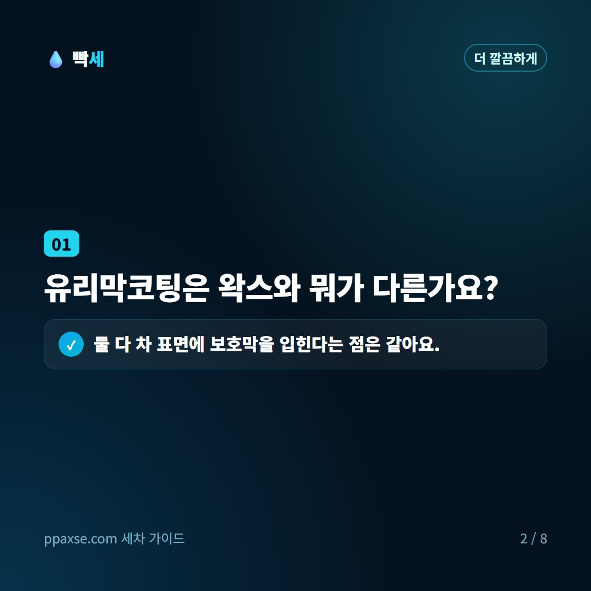
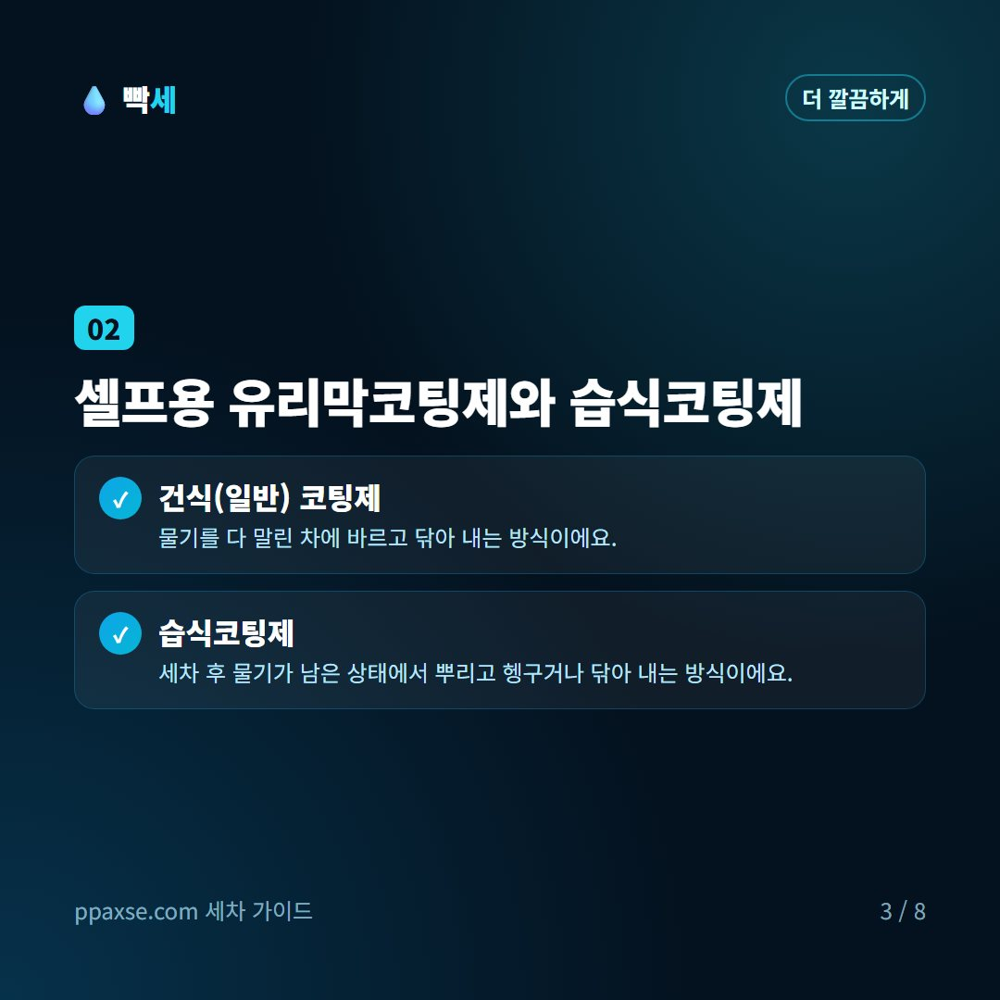
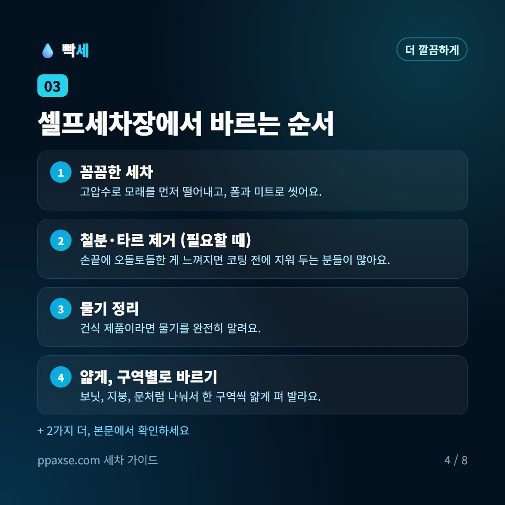
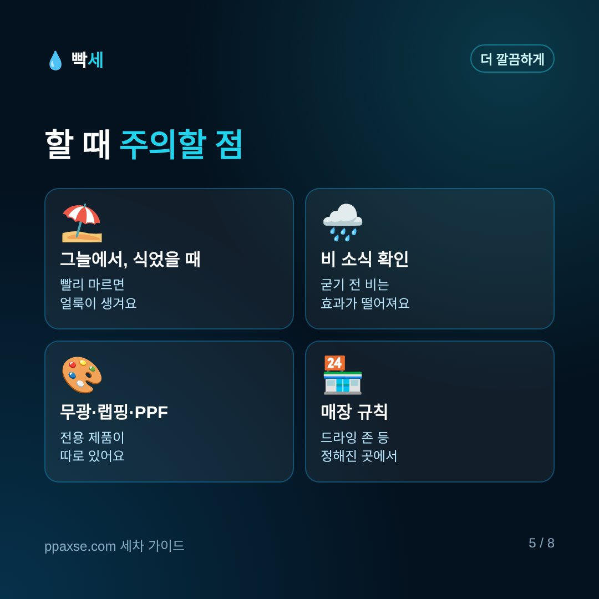
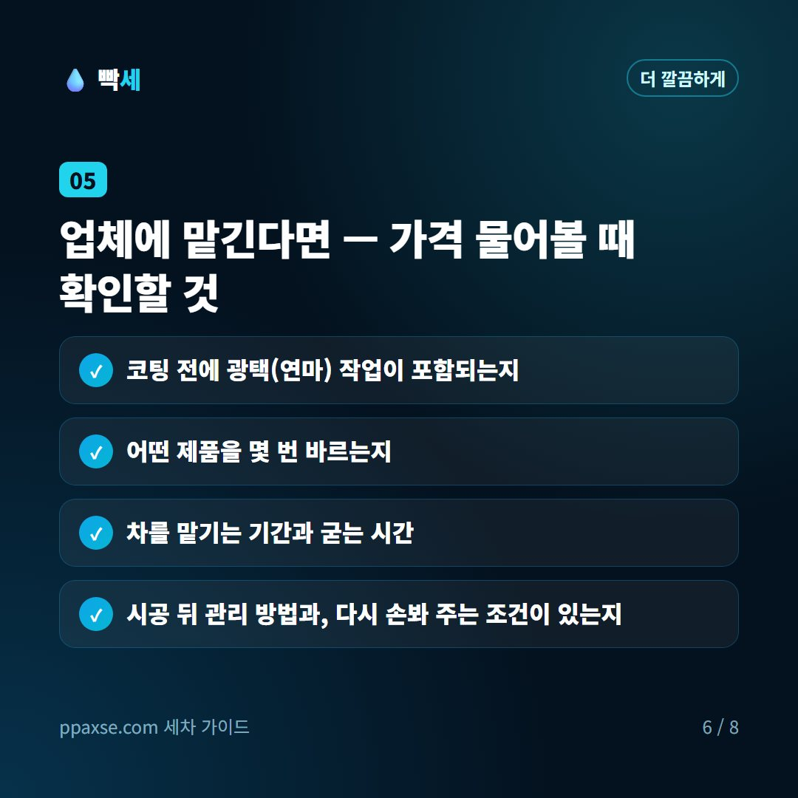

셀프세차장에서 유리막코팅제 쓰는 법 — 자동차 유리막코팅, 직접 해도 될까요
"유리막코팅"이라는 이름 때문에 창문 유리에 하는 작업으로 아는 분도 있지만, 보통은 차 도장(페인트) 위에 유리 성분처럼 단단한 얇은 막을 입히는 작업을 말해요. 업체에 맡기는 방법도 있지만, 요즘은 셀프세차장에서 직접 바르는 유리막코팅제도 많이 찾아요. 이 글에서는 직접 할 때의 순서와 주의할 점을 정리했어요.
유리막코팅은 왁스와 뭐가 다른가요?

둘 다 차 표면에 보호막을 입힌다는 점은 같아요. 다만 유리막코팅제는 왁스보다 더 단단하고 오래가는 막을 목표로 만든 제품이 많아요. 대신 바르기 전 준비가 더 중요하고, 잘못 바르면 얼룩이 남아 지우기 번거로울 수 있어요. 왁스가 궁금하다면 물왁스 vs 고체왁스를 먼저 보셔도 좋아요.
셀프용 유리막코팅제와 습식코팅제

- 건식(일반) 코팅제 — 물기를 다 말린 차에 바르고 닦아 내는 방식이에요. 꼼꼼하게 할 수 있지만 시간이 걸려요.
- 습식코팅제 — 세차 후 물기가 남은 상태에서 뿌리고 헹구거나 닦아 내는 방식이에요. 빠르고 쉬워서 셀프세차장에서 많이 써요. 대신 막이 얇은 편이라 자주 해 주는 분들이 많아요.
어떤 방식인지, 물기가 있어도 되는지는 제품마다 달라요. 꼭 설명서를 먼저 확인해 주세요.
셀프세차장에서 바르는 순서

- 꼼꼼한 세차 — 고압수로 모래를 먼저 떨어내고, 폼과 미트로 씻어요. 오염이 남은 채로 코팅하면 그 위에 막이 덮여요.
- 철분·타르 제거 (필요할 때) — 손끝에 오돌토돌한 게 느껴지면 코팅 전에 지워 두는 분들이 많아요. 철분 제거·타르 제거, 언제 해야 할까요를 참고하세요.
- 물기 정리 — 건식 제품이라면 물기를 완전히 말려요. 문 틈, 사이드미러 밑에서 물이 흘러나와 코팅면에 묻지 않게 주의해요. 타월은 드라잉 타월 고르는 법과 세탁법도 함께 보세요.
- 얇게, 구역별로 바르기 — 보닛, 지붕, 문처럼 나눠서 한 구역씩 얇게 펴 발라요.
- 안내된 시간에 닦아 내기 — 너무 늦게 닦으면 얼룩이 남을 수 있어요. 깨끗한 타월로 한 번 더 닦아 남은 자국이 없는지 봐요.
- 굳는 시간 지키기 — 바른 뒤 일정 시간 비나 물을 피하라고 안내하는 제품이 많아요. 시간은 제품마다 달라요.
할 때 주의할 점

- 그늘에서, 차가 식었을 때 — 햇볕 아래에서는 약제가 너무 빨리 말라 얼룩이 생기기 쉬워요.
- 비 소식 확인 — 굳기 전에 비를 맞으면 효과가 떨어질 수 있어요.
- 무광·랩핑·PPF 차량 — 전용 제품이 따로 있는 경우가 많아요. 일반 코팅제를 쓰기 전에 꼭 확인하세요.
- 매장 규칙 — 오래 자리를 쓰는 작업은 드라잉 존 등 정해진 곳에서 해 주세요.
업체에 맡긴다면 — 가격 물어볼 때 확인할 것

유리막코팅 가격은 업체와 차 크기, 작업 범위에 따라 많이 달라서 숫자로 말씀드리기 어려워요. 비교할 때는 이런 걸 물어보면 좋아요.
- 코팅 전에 광택(연마) 작업이 포함되는지
- 어떤 제품을 몇 번 바르는지
- 차를 맡기는 기간과 굳는 시간
- 시공 뒤 관리 방법과, 다시 손봐 주는 조건이 있는지
내 주변 셀프세차장 찾기
코팅을 직접 하려면 물을 넉넉히 쓰고, 그늘진 곳에서 천천히 닦을 수 있는 세차장이 편해요. 빡세 지도에서는 셀프세차장과 디테일링샵 정보를 이용자들이 함께 채워가고 있어요. 지역별 목록은 지역별 세차장 모음에서 볼 수 있어요.
다녀온 곳에서 코팅 작업을 하기 편했는지 한마디로 남겨 주시면 다음 사람에게 큰 도움이 돼요.
셀프세차·노터치·손세차를 종류별로 골라 보고, 폼건·온수·하부세차 같은 시설 정보도 확인할 수 있어요.
🗺️ 세차장 지도 열기✏️ 자주 가는 세차장에 한마디 남기기🎁 한마디를 남기면 가입 없이도 매주 기프티콘 추첨에 응모돼요.